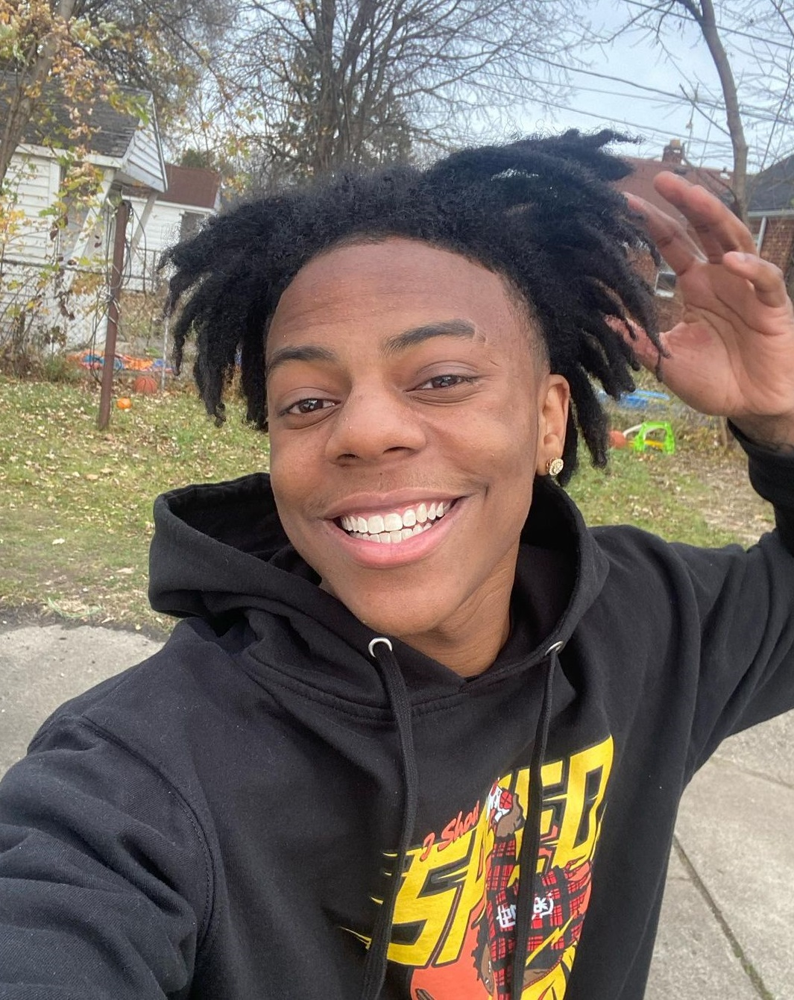

01⌁
Open to learning & opportunities
Curious by nature.
Always becoming.
I’m Jason Chen, a student who enjoys reading widely, asking better questions, and turning ideas into things worth sharing.
 read / make / play
stay in motion
read / make / play
stay in motion
READ DEEPLY✳MAKE OFTEN✳STAY CURIOUS✳READ DEEPLY✳MAKE OFTEN
Selected work
Things I’m building
A growing collection of experiments, essays, and ideas. More to come.
02
03
A little about me
Curiosity keeps me
in motion.

I’m Jason Chen—a computer science student, enthusiastic reader, and lifelong fan of the next great idea. I like the moment when something confusing starts to make sense: a difficult chapter, a stubborn bug, or a basketball play that only works because everyone reads the floor at the right time.
That same combination of patience and pattern recognition shapes how I approach technology. I enjoy breaking big problems into smaller moves, learning the tools that help me build, and turning rough ideas into work that is clear, useful, and easy for other people to understand. Through coursework and personal experiments, I’m developing experience with software development, computer science fundamentals, maintainable code, documentation, and collaboration.
Basketball keeps me competitive and present; reading keeps me curious; computer science gives me a way to connect the two. I’m looking for opportunities where I can contribute thoughtfully, learn from experienced teammates, and keep improving one possession—or one problem—at a time.
What I’m readingCurrently curious about
Reading & interests
01
Reading
Essays, fiction, history, and anything that opens up a new way of seeing.
02
Learning in public
Sharing notes, documenting experiments, and making the process visible.
03
Better questions
Curiosity as a practice: slowing down, paying attention, and asking why.
Have an opportunity?
Let’s start
a conversation.
I’m always happy to connect with people who care about thoughtful work and continuous learning.
Email Jason